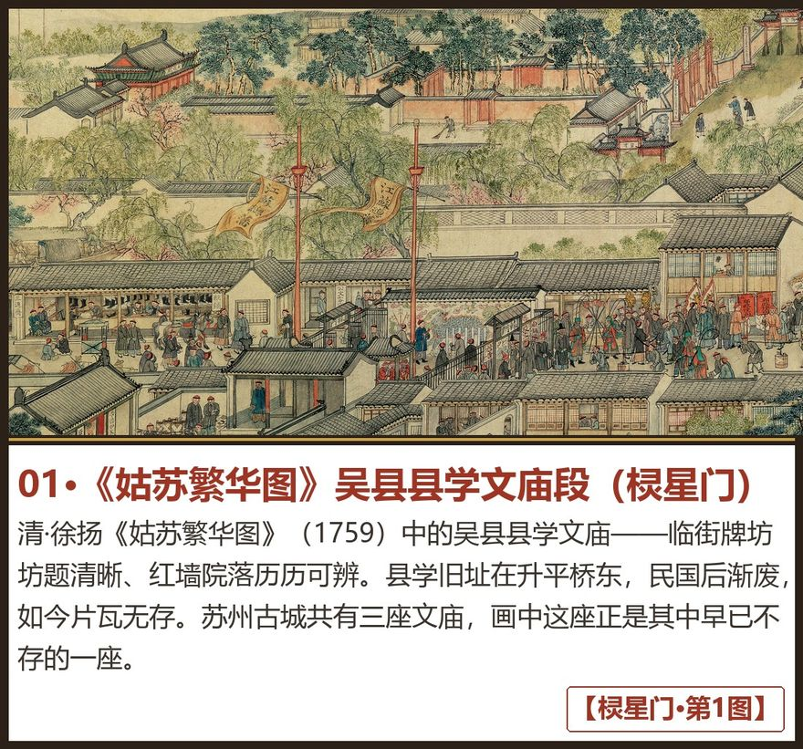
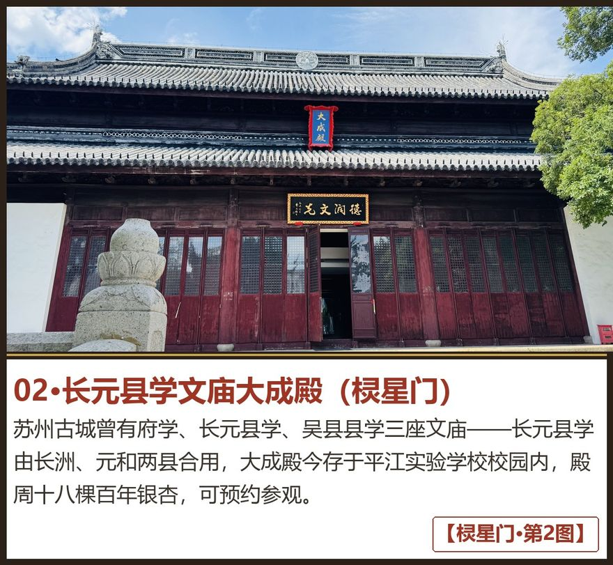
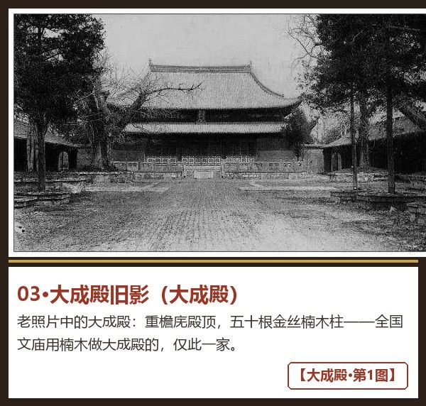
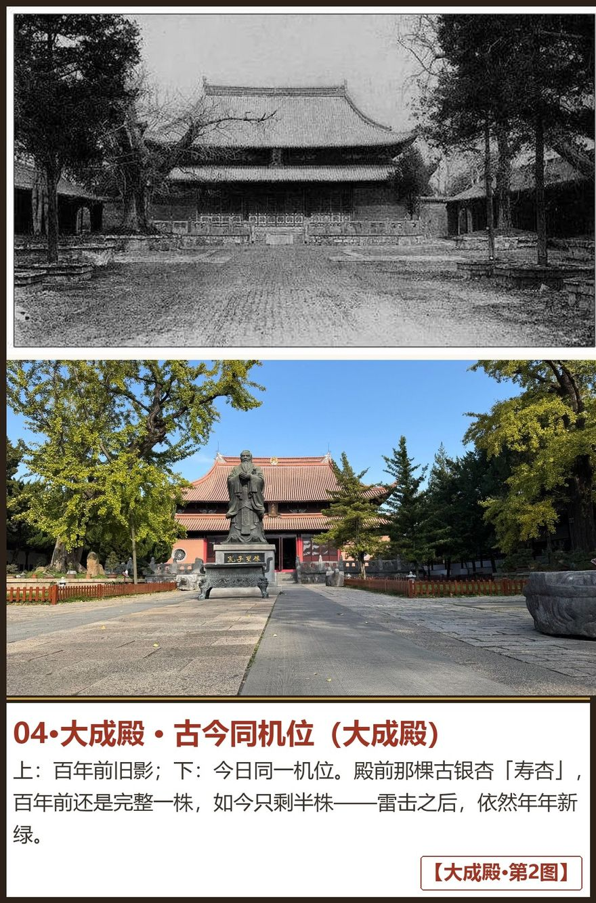
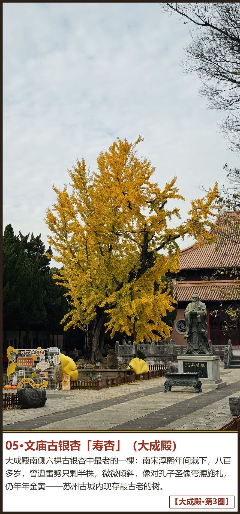
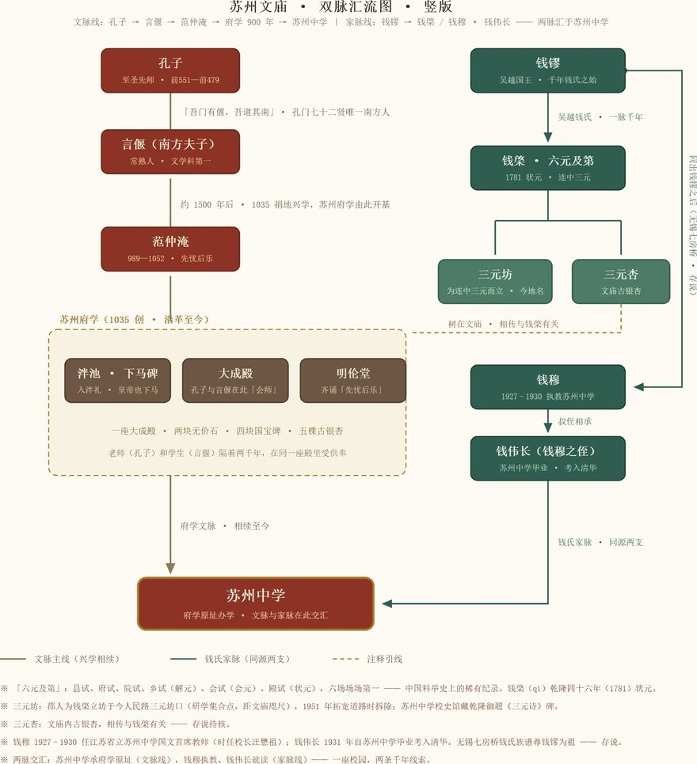

棂星门 · 大成殿 · 古银杏 · 双脉汇流 ｜ 课后回顾 · 欢迎转发

清·徐扬《姑苏繁华图》（1759）中的吴县县学文庙——临街牌坊坊题清晰、红墙院落历历可辨。县学旧址在升平桥东（前门通和坊），民国后渐废，如今片瓦无存。苏州古城共有三座文庙，画中这座正是其中早已不存的一座。

苏州古城曾有府学、长元县学、吴县县学三座文庙——长元县学由长洲、元和两县合用，大成殿今存于平江实验学校校园内，殿周十八棵百年银杏，可预约参观。

老照片中的大成殿：重檐庑殿顶，五十根金丝楠木柱——全国文庙用楠木做大成殿的，仅此一家。

上为百年前旧影，下为今日同一机位：殿前那棵古银杏「寿杏」，百年前还是完整一株，如今只剩半株——雷击之后，依然年年新绿。

大成殿南侧六棵古银杏中最老的一棵：南宋淳熙年间栽下，八百多岁，遭雷劈只剩半株，微微倾斜，像对孔子圣像弯腰施礼，仍年年金黄——苏州古城内现存最古老的树。

文脉线：孔子→言偃→范仲淹→府学900年→苏州中学；家脉线：钱镠→钱棨（三元坊·三元杏）／钱穆·钱伟长——两脉汇于苏州中学。一条兴学相续九百年，一族同源一千年，一座校园两条线。
天文、地理、帝王绍运三碑手机看不清细节——《平江图》＋四大宋碑深缩放网页建成后，二维码卡入包（与胥门线规划展示馆站同页跨线复用）。